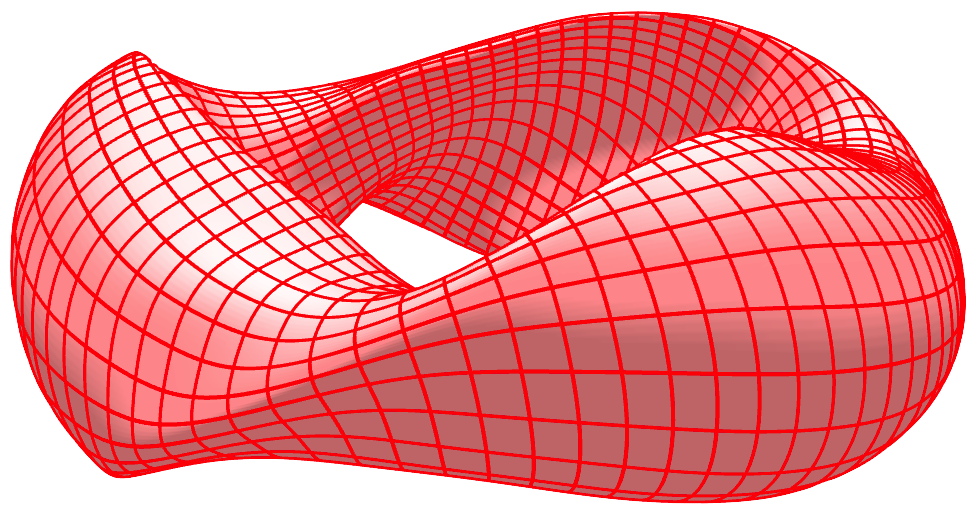

Contents
modeplot()
surfplot()
symplot()
Booz_xform
Booz_xform.init_from_vmec()
Booz_xform.read_boozmn()
Booz_xform.read_wout()
Booz_xform.run()
Booz_xform.write_boozmn()
Booz_xform.Boozer_G
Booz_xform.Boozer_G_all
Booz_xform.Boozer_I
Booz_xform.Boozer_I_all
Booz_xform.aspect
Booz_xform.asym
Booz_xform.bmnc
Booz_xform.bmnc_b
Booz_xform.bmns
Booz_xform.bmns_b
Booz_xform.bsubumnc
Booz_xform.bsubumns
Booz_xform.bsubvmnc
Booz_xform.bsubvmns
Booz_xform.chi
Booz_xform.compute_surfs
Booz_xform.gmnc_b
Booz_xform.gmns_b
Booz_xform.iota
Booz_xform.lmnc
Booz_xform.lmns
Booz_xform.mboz
Booz_xform.mnboz
Booz_xform.mnmax
Booz_xform.mnmax_nyq
Booz_xform.mpol
Booz_xform.mpol_nyq
Booz_xform.nboz
Booz_xform.nfp
Booz_xform.ns_b
Booz_xform.ns_in
Booz_xform.ntor
Booz_xform.ntor_nyq
Booz_xform.numnc_b
Booz_xform.numns_b
Booz_xform.phi
Booz_xform.phip
Booz_xform.pres
Booz_xform.rmnc
Booz_xform.rmnc_b
Booz_xform.rmns
Booz_xform.rmns_b
Booz_xform.s_b
Booz_xform.s_in
Booz_xform.toroidal_flux
Booz_xform.verbose
Booz_xform.xm
Booz_xform.xm_b
Booz_xform.xm_nyq
Booz_xform.xn
Booz_xform.xn_b
Booz_xform.xn_nyq
Booz_xform.zmnc
Booz_xform.zmnc_b
Booz_xform.zmns
Booz_xform.zmns_b
omp_max_threads()
booz_xform::Booz_xform
Booz_xform()
read_wout()
init_from_vmec()
run()
write_boozmn()
read_boozmn()
init()
surface_solve()
verbose
asym
nfp
mpol
ntor
mnmax
mpol_nyq
ntor_nyq
mnmax_nyq
xm
xn
xm_nyq
xn_nyq
ns_in
s_in
iota
rmnc
rmns
zmnc
zmns
lmnc
lmns
bmnc
bmns
bsubumnc
bsubumns
bsubvmnc
bsubvmns
mboz
nboz
compute_surfs
aspect
toroidal_flux
ns_b
s_b
mnboz
xm_b
xn_b
bmnc_b
bmns_b
gmnc_b
gmns_b
rmnc_b
rmns_b
zmnc_b
zmns_b
numnc_b
numns_b
Boozer_G
Boozer_G_all
Boozer_I
Boozer_I_all
phi
phip
chi
pres
Please activate JavaScript to enable the search functionality.